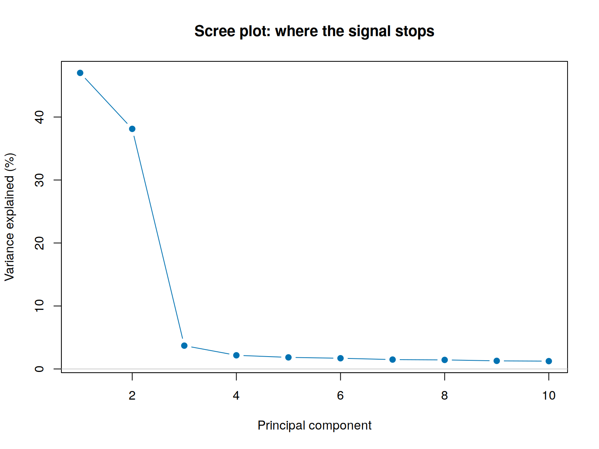
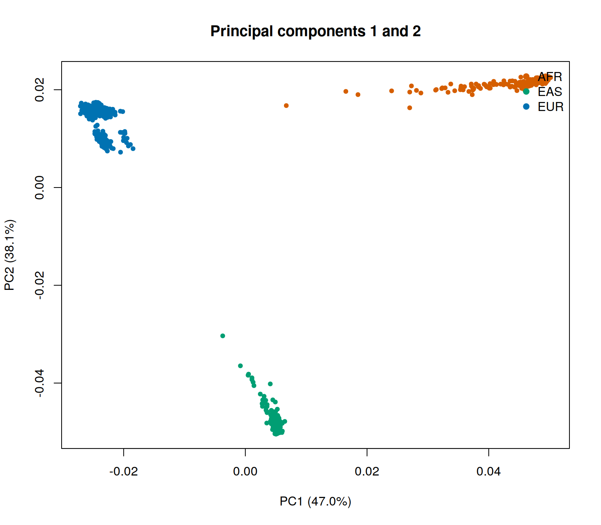
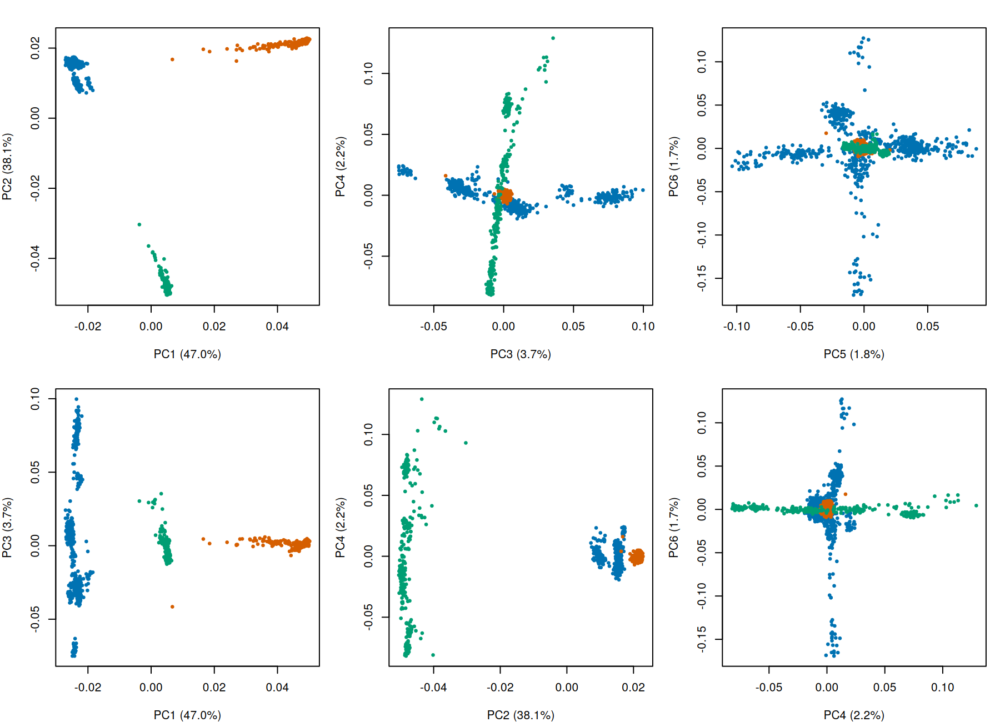
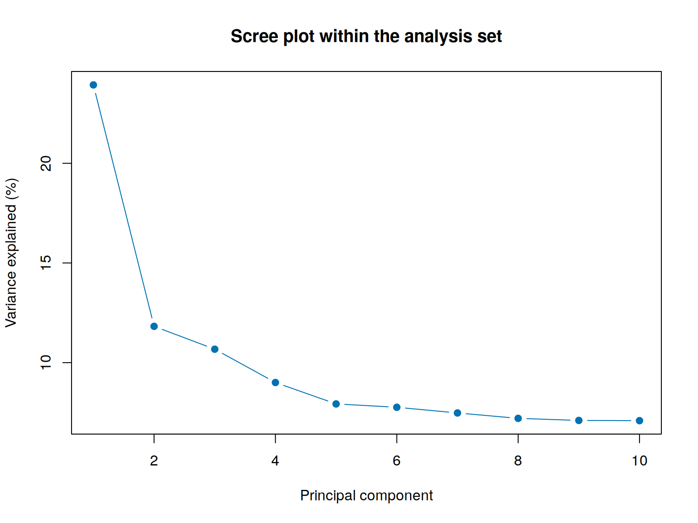

Population stratification
Population stratification is what happens when the people in a study differ in ancestry, and those differences line up with case or control status. Allele frequencies vary between populations for reasons that have nothing to do with disease, so if one ancestry group is over-represented among cases, every variant whose frequency differs between groups will look associated.
The damage is not only false positives. Uncorrected structure can equally mask a real association, producing a false negative and a loss of power that leaves no trace in the output. In a rare cancer, where the sample size gives no margin for either error, this is among the most consequential steps in the whole workflow.
This page covers three things: seeing the structure, deciding what to do about it, and producing the covariates that Section 4A will use.
~/gwas_tutorial/
├── demo_data/
├── scripts/02_population_stratification/
└── results/pca/Finish Genotyping quality control first. You need:
results/qc/pdac_demo_08_filt.bed/.bim/.fam, the QC-passed datasetdemo_data/sample_ancestry.tsvanddemo_data/phenotype.txt- working
plink2andRscriptcommands
All commands are run from the project root.
Your commands write to results/pca/. The figures shown here are the outputs committed in sections/02_population_stratification/results/, produced by exactly these scripts on the demonstration data.
01 - LD pruning
Why. Principal component analysis has to run on variants that are approximately independent. Variants in linkage disequilibrium repeat the same information, and dense regions such as the major histocompatibility complex on chromosome 6 would otherwise dominate the result, so that the leading components describe local genomic architecture instead of ancestry.
bash scripts/02_population_stratification/01_ld_pruning.shOn the demonstration data this keeps 221,352 variants and prunes away 180,557. Losing almost half is expected: it is redundancy being removed. The pruned set is used for PCA and relatedness only, never for association testing.
--indep-pairwise 50 5 0.2 uses a 50-variant window, a step of 5, and an r² threshold of 0.2. A threshold of 0.1 (|r| ≈ 0.32) is more stringent; 0.2 (|r| ≈ 0.45) more permissive. Neither is correct in the abstract. What is required is to report the value used and to confirm that the leading components do not change materially when it is varied.
02 - Principal component analysis
Why. PCA reduces the genotype matrix to a handful of uncorrelated axes, ordered by how much variance each explains. It assumes nothing about population structure; structure is simply the strongest biological signal in the variance that PCA summarises when a cohort spans continents.
bash scripts/02_population_stratification/02_pca_all.shOutputs are pdac_demo_02_pca_all.eigenvec, one row per individual, and pdac_demo_02_pca_all.eigenval, the variance carried by each component.
03 - Looking at the result
Rscript scripts/02_population_stratification/03_pca_plots.RThree plots, each answering a different question.

How many components carry real signal? On the demonstration data PC1 explains 47.0% of the variance and PC2 38.1%, then the curve collapses to 3.7% at PC3. That cliff is the signature of discrete continental ancestry: two components separate three groups, and everything after is noise and fine structure.

Three clusters, cleanly separated. This is what a multi-ancestry cohort looks like, and it is why the primary analysis cannot simply pool everyone.

The panel most often skipped, and the one most often needed. In a cohort that looks homogeneous on PC1 and PC2, real structure frequently appears further down, and it confounds the association test just as effectively. Always inspect at least PC1 through PC6.
The separation here is unusually clean because the dataset was deliberately built from three distinct continental groups. Real cohorts are messier: a predominantly European PDAC consortium will show one diffuse cloud with gradients running through it, not three islands. The skill to carry away is reading the scree plot and the higher components, not recognising a picture that looks like this one.
04 - Deciding who is analysed
Why. Seeing the structure is not the same as handling it. Three strategies are defensible.
| Strategy | What it costs | When it is right |
|---|---|---|
| Analyse the largest group alone | Discards data | Other groups too small to stand alone |
| Keep everyone, ancestry as covariate | Assumes effects are portable across populations | Groups are small and effects plausibly shared |
| Analyse each group, then meta-analyse | Nothing, but needs each group to be large enough | Genuinely multi-ancestry cohorts |
bash scripts/02_population_stratification/04_define_analysis_set.shOn the demonstration data:
| QC-passed total | 1,239 |
| European | 625 |
| East Asian | 319 |
| African | 295 |
| Analysis set | 625: 229 cases, 396 controls |
| Effective sample size | 580.4 |
The third strategy is the one to prefer whenever it is available, because it neither discards data nor assumes that effect sizes transfer between populations with different causal-allele frequencies and LD structures. Here the non-European groups are too small to form meaningful strata, which is the situation of most real rare-cancer cohorts, so the analysis proceeds on the European subset alone.
4 × cases × controls / (cases + controls) = 580.4, not 625. In an unbalanced design the effective figure is what governs power, and it is what should be reported. Section 4A returns to what this number does and does not make detectable.
This dataset ships with true ancestry labels, which is a teaching convenience. In a real study no such labels exist: the assignment comes from the PCA itself, or from projection onto a reference panel such as 1000 Genomes or HGDP, with a threshold on the estimated ancestry proportion, 80% being a common choice. Step 03 above is the check that the labels and the genetic data agree, which is worth doing whenever metadata claims an ancestry.
05 - Recomputing the components within the analysis set
Why. This step is frequently skipped, and skipping it is a mistake.
The components from Step 02 describe continental separation. Once the non-European individuals are removed, those axes describe something that is no longer in the data. What remains, and what can still confound the test, is fine-scale structure within Europe, and only a PCA computed within the analysis set can see it. LD pruning is repeated for the same reason: which variants are correlated depends on allele frequencies, which differ between populations.
bash scripts/02_population_stratification/05_pca_within_eur.sh
Compare this with the scree plot from Step 03. The cliff is gone. PC1 now explains 23.9% and PC2 11.8%, and the curve declines gently instead of collapsing, which is what within-population structure looks like: continuous gradients rather than discrete groups.
Ten is a convention with no justification attached. The guide recommends three checks instead:
- Inspect the scree plot for the point where additional components explain negligible variance.
- Test each component for association with case status, which Section 4A does automatically.
- Confirm that the genomic inflation factor and the leading associations are stable across a range of component counts.
If the results move materially between five and twenty components, that instability is itself the finding and belongs in the paper.
What you now have
pdac_demo_02_pca_eur.eigenvec holds the covariates for association testing, and pdac_demo_02_eur_keep.txt defines who is analysed. Both feed directly into the next section.
Key decisions on this page
- The r² threshold for LD pruning, reported and checked for stability.
- Which ancestry strategy: single group, pooled with a covariate, or stratified with meta-analysis.
- Whether individuals distant from the main cluster are genuine outliers or genuine diversity. Distance alone does not justify exclusion, and in a rare cancer every excluded case is a permanent loss of power. Document the number of components examined, the threshold, the number removed, and the effect of their removal on the inflation factor.
- How many components to carry forward, decided from evidence rather than convention.
Next: Association testing.